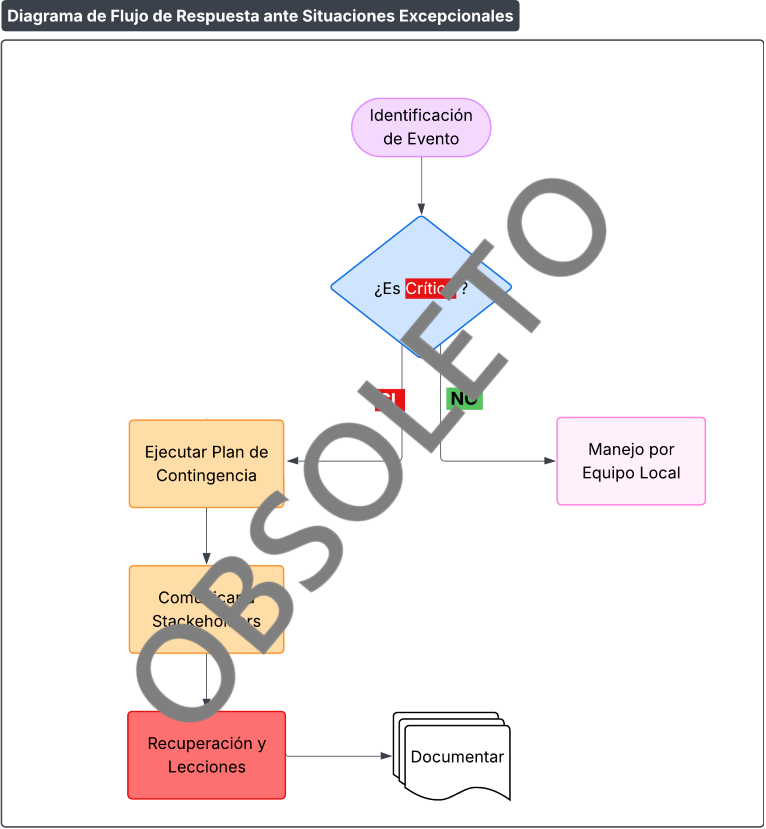

Procedimiento de Seguridad en Situaciones Excepcionales REEMPLAZADA
Código: P312-IT-1
Última revisión: 20/1/2026
Rev. N°: 1
Cumple: TISAX AL3, ISO 27001:2022
Reemplazado por 1.6, 5.2.8 y 5.2.9
1 OBJETIVO
Mitigar riesgos en eventos disruptivos (ciberataques, desastres naturales, etc.), protegiendo activos críticos (ej.: CATIA/NX, SIP), y en cumplimiento de normativas de ISO/IEC 27001:2022, así como los requisitos del marco TISAX y clientes automotrices.
2 IDENTIFICACIÓN DE SITUACIONES EXCEPCIONALES
Matriz de Riesgos Excepcionales:
| Escenario | Impacto en Prodismo | Activos Afectados |
|---|---|---|
| Ransomware en servidores | Parálisis de producción (CATIA/SIP) | Windows Server, backups |
| Fuego en Data Center | Daño físico a servidores on-premise | Hardware, diseños no cloud |
| Corte eléctrico prolongado | Interrupción >24h en toda la planta | Servidores (Documentación, Diseños, SIP), estaciones CATIA/NX |
| Protestas sociales | Bloqueo de acceso a instalaciones | Personal, equipos críticos |
Herramienta:
- Registro en matriz de riesgos TISAX (priorizar por probabilidad/impacto)
3 COMPONENTES DE INFRAESTRUCTURA EN PELIGRO
Inventario de Vulnerabilidades:
| Componente | Riesgo Asociado | Medida de Mitigación |
|---|---|---|
| Servidor Interno | Ataque físico/cibernético |
- UPS + generador eléctrico - Segmentación de red |
| Administración SIP | Falta de backups actualizados |
- Backup automático diario - Alojamiento off-premise |
| Acceso principal | Bloqueo por protestas |
- Ruta alternativa - Acceso a Server Interno remotamente (Home Office) |
4 MEDIDAS PARA LIMITAR IMPACTOS
Plan de Contingencia por Escenario:
| Escenario | Acción Inmediata | Responsable |
|---|---|---|
| Ransomware |
1. Aislar servidores 2. Activar backups offline 3. Contactar a proveedor de servicios |
Admin IT / IT Manager |
| Inundación |
1. Colocar detectores de humo en Salas de Servidores y Archivo 2. Notificar a clientes |
Admin IT |
| Corte eléctrico | 1. Usar UPS para servidores y endpoints | Admin IT |
Protocolos Clave:
- Comunicación:
- Notificar a clientes automotrices en <2h, si afecta entregas
- Recuperación:
- Tiempo máximo de inactividad para CATIA/NX: 24 horas
5 RECOMENDACIONES PARA TISAX
- Simulacros:
- Realizar 1 simulacro anual de ransomware
- Clientes Automotrices:
- Reportar planes de contingencia en auditorías
- Incluir repuestos críticos en stock de emergencia
- Tecnología:
- Implementar SIEM para detección temprana de ciberataques
6 FLUJO DE RESPUESTA ANTE SITUACIONES EXCEPCIONALES

Diagrama de Flujo de Respuesta ante Situaciones Excepcionales
7 REVISIONES DEL DOCUMENTO
| Rev. N° | Fecha | Descripción |
|---|---|---|
| 0 | 25/8/2025 | Primera Emisión del documento |
| 1 | 20/1/2026 | Revisión completa del documento |